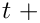
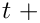
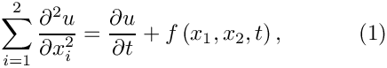
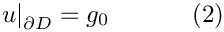
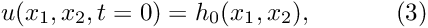
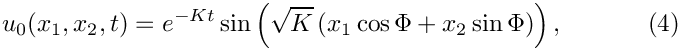
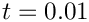
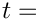
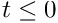
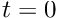

This is our first time-dependent example problem. We will demonstrate that, compared to the solution of steady problems, the solution of time-dependent problems only requires a few additional steps:
- The creation of a suitable
TimeStepperobject and its addition to theProblem'slist of timesteppers. (Problemsmay employ multipleTimeSteppers– a key requirement for the simulation of multiphysics problems.) - The initialisation of the timestep,
dt. - Setting the initial conditions by assigning suitable values for the
Dataobjects' "history values" and theNodes'"positional history values". - Optionally: (Re-)implementing the empty virtual functions
Problem::actions_before_implicit_timestep()andProblem::actions_after_implicit_timestep(), e.g. to update time-dependent boundary conditions before each timestep.
Once these steps have been performed, oomph-lib's unsteady Newton solver, Problem::unsteady_newton_solve(...), may be called to advance the solution from its state at time  to its new state at 
to its new state at  dt.
The example problem
We will illustrate the basic timestepping procedures by considering the solution of the 2D unsteady heat equation in a square domain:
 in the square domain![$ D = \{x_i \in [0,1]; i=1,2 \} $](form_3.png) , subject to the Dirichlet boundary conditions , subject to the Dirichlet boundary conditions  and initial conditions where the functions and and  are given. are given. |
Here we consider the unforced case,  , and choose boundary and initial conditions that are consistent with the exact solution
, and choose boundary and initial conditions that are consistent with the exact solution

where  and
and  are constants, controlling the decay rate of the solution and its spatial orientation, respectively.
are constants, controlling the decay rate of the solution and its spatial orientation, respectively.
The figure below shows a plot of computed and exact solutions at time  (for an animation
click here).

Global parameters and functions
As usual, we store the problem parameters in a namespace.
The driver code
We start by building the Problem object, create a DocInfo object to label the output files, and open a trace file in which we will record the time evolution of the solution and the error. We choose the length t_max of the simulation and the (constant) timestep, dt.
Before using any of oomph-lib's timestepping functions, the timestep dt must be passed to the Problem's timestepping routines by calling the function Problem::initialise_dt(...) which sets the weights for all timesteppers in the problem.
Next we assign the initial conditions by calling set_initial_condition(), to be discussed in more detail below, and document the initial conditions.
Finally, we execute the timestepping loop and document the computed solutions.
In this loop, each call to the unsteady Newton solver, Problem::unsteady_newton_solve(...), advances the solution from its current state, at time  Problem::time_pt()->time(), to dt. The unsteady Newton solver automatically "shifts" the history values "backwards" and advances the value of the continuous time.
The problem class
The Problem classes for time-dependent problems are very similar to those for steady problems. The most important additional member functions are Problem::actions_before_implicit_timestep() and Problem::actions_after_implicit_timestep() (both defined as empty virtual functions in the Problem base class) and set_initial_condition(). The functions Problem::actions_before_implicit_timestep() and Problem::actions_after_implicit_timestep() are called automatically by oomph-lib's unsteady Newton solver Problem::unsteady_newton_solve() and may be used to update any time-dependent boundary conditions before the Newton solve, or to perform any postprocessing steps after a timestep has been completed. Here we only use the first of these two functions.
We note that the (self-explanatory) function set_initial_condition() overwrites an empty virtual function in the Problem base class. While the assignment of initial conditions could, in principle, be performed by any other function, e.g. the Problem constructor, we strongly recommend using this function to facilitate the extension to spatial adaptivity. (In spatially adaptive computations of time-dependent problems, a standard interface for the re-assignment of initial conditions following mesh adaptations is required; we will discuss this aspect in
another example).
Finally, the private member data Control_node_pt provides storage for a pointer to a control Node at which we shall document the evolution of the solution.
The problem constructor
We start by constructing the TimeStepper, the second-order accurate BDF<2> timestepper from the BDF family, and pass a pointer to it to the Problem, using the member function Problem::add_time_stepper_pt(...). As the name of this function indicates, oomph-lib can operate with multiple timesteppers – an essential feature in multi-physics problems. (For instance, in fluid-structure interaction-problems timestepping for the solid equations might be performed with a timestepper from the Newmark family, while a BDF timestepper might be used for the Navier–Stokes equations.) When called for the first time, the function
Problem::add_time_stepper_pt(...) creates the Problem's Time object (accessible via Problem::time_pt()) with sufficient storage for the history of previous timesteps. This is required if the timestep is adjusted during the simulation, e.g. when an adaptive timestepper is used. (If further TimeSteppers which require more storage are added subsequently, Problem::add_time_stepper(...) updates the amount of storage in the Problem's Time object accordingly).
Next we set the problem parameters and build the mesh, passing the pointer to the TimeStepper as the last argument to the mesh constructor.
The position of the pointer to the timestepper in the list of arguments to the mesh constructor reflects another oomph-lib convention:
Recall that all
This convention allows the use of meshes in steady problems without having to (artificially) create a timestepper. The following code fragment illustrates the implementation of this approach in a mesh constructor: //=======================================================================
/// Some mesh class
//=======================================================================
template <class ELEMENT>
class SomeMesh : public virtual Mesh
{
public:
/// \short Constructor: Pass number of elements and pointer to timestepper.
/// Note that the timestepper defaults to the Steady default timestepper.
SomeMesh(const unsigned& n_element, TimeStepper* time_stepper_pt=
&Mesh::Default_TimeStepper)
{
[...]
// Allocate storage for all n_element elements in the mesh
Element_pt.resize(n_element);
// Create first element and store it (in its incarnation as
// a GeneralisedElement) in the Mesh's Element_pt[] array
Element_pt[0] = new ELEMENT;
// Create the element's first node and store it in the
// Mesh's Node_pt[] array. [The member function
// Mesh::finite_element_pt(...) recasts the pointer to the
// GeneralisedElement to a pointer to a FiniteElement -- only
// FiniteElements have a member function construct_node(...)]
Node_pt[0] = finite_element_pt(0)->construct_node(0,time_stepper_pt);
[...]
}
[...]
};
|
Next, we apply the boundary conditions, pinning the values at all boundary nodes.
Finally, we loop over the elements and pass the pointer to the source function.
Actions before (implicit) timestep
We overload the (empty) virtual function Problem::actions_before_implicit_timestep() to update the time-dependent boundary conditions (2), using the current value of the continuous time from the Problem's Time object.
Set initial condition
Before starting a time-dependent simulation, the current and history values of all Data objects must be initialised. In a BDF timestepping scheme, the history values represent the solution at previous discrete timesteps. In the present problem (where the exact solution is known – admittedly, a somewhat artificial situation) we can therefore assign the history values by looping over the previous timesteps and setting the history values with Data::set_value(...).
Important: oomph-lib's UnsteadyHeatEquations are based on the Arbitrary-Lagrangian-Eulerian (ALE) formulation of the unsteady heat equation to permit computations in moving domains; we will illustrate this capability in
another example. In such problems, the nodal positions may vary as a function of time. In the present problem, the computation is performed in a fixed domain, therefore we initialise the previous nodal positions with their current values, accessed via the member function Node::x(t,i) which returns (a reference to) the i -th nodal coordinate at previous timestep t.
Many functions in While, in general, not all "history values" represent the solution at previous timesteps, the "history values" that do, should be (and, for any existing TimeStepper::nprev_values()
As an example, TimeStepper::ntstorage()
As an example, |
Here is the source code for the set_initial_condition() function:
Post-processing
As in many previous examples, this member function outputs the computed solution, the exact solution and the error. We augment the solution data by tecplot text and geometries to facilitate the visualisation and record the time evolution of the solution and the error in the trace file.
Comments and Exercises
The current example only illustrates the most basic timestepping procedures. In subsequent examples we will demonstrate oomph-lib's
dump and restart functions, the use of adaptive timestepping, the use of spatial adaptivity, computations in moving domains, and the combination of temporal and spatial adaptivity.
We stress that setting the initial conditions in a "real" problem often presents a delicate step, especially if higher-order timesteppers from the BDF family are used. This is because in the absence of a known exact solution, the initial condition (3) only provides enough information to determine a single "history value" at each node – the value at the initial time. oomph-lib's timestepping procedures provide several functions that allow the simulation to be initiated with an "impulsive start", corresponding to a past history in which the boundary condition (3) describes the system's state for all  rather than only at  . For instance, the top-level function Problem::assign_initial_values_impulsive() sets the "history values" of all Data objects and the Nodes' "positional history values" to values that are appropriate for an impulsive start from the currently assigned nodal values and positions. The following exercises aim to explore this functionality.
Exercises
- Replace the call to
problem.set_initial_condition()in the main function by a call toProblem::assign_initial_values_impulsive()and analyse the results. [Hint: WhenDataobjects are created, their values are initialised to zero.] - Confirm that the loop over the coordinate directions in// Loop over coordinate directions: Mesh doesn't move, so// previous position = present positionfor (unsigned i=0;i<2;i++){mesh_pt()->node_pt(n)->x(t,i)=x[i];}
set_initial_condition(), can be replaced by[This statement could then be moved outside the loop over the previous time levels.]time_stepper_pt()->assign_initial_positions_impulsive(mesh_pt()->node_pt(n)); - Confirm that the initialisation of the previous nodal positions is essential by commenting out this step – see the
ALE example for further details on computations in moving domains. - Overwrite the correct assignment of the "history values" in
set_initial_condition()by adding the statementProblem::assign_initial_values_impulsive()at the end of this function (rather than bypassing the assignment completely as in the first exercise). Repeat this with theBDF<1>andBDF<4>timesteppers and explain the different behaviour. - Examine the accuracy of the various
BDFtimesteppers by re-running the simulations with various timesteppers and with different timesteps.
Source files for this tutorial
- The source files for this tutorial are located in the directory:
demo_drivers/unsteady_heat/two_d_unsteady_heat/ - The driver code is:
demo_drivers/unsteady_heat/two_d_unsteady_heat/two_d_unsteady_heat.cc
PDF file
A pdf version of this document is available.